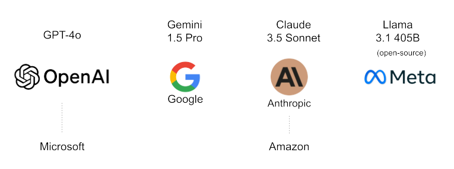
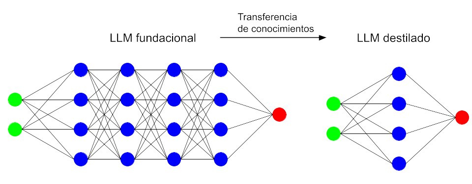
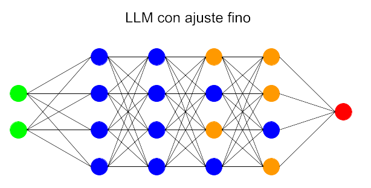
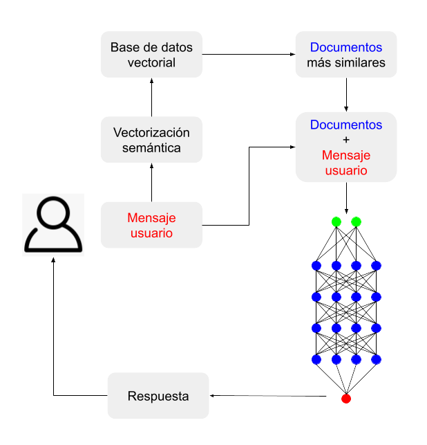

LLM: modo de empleo#
2024-10-19
Los LLM (Large Language Model → Modelo Grande de Lenguage) son los modelos que están detrás de la actual revolución de la IA generativa. En esencia no dejan de ser modelos de aprendizaje automático basados en redes neuronales a gran escala, constituyendo lo que se conoce como aprendizaje profundo o Deep Learning. Con una arquitectura y algoritmia extraordinariamente complejas, son las estrellas del momento en el mundo de la Inteligencia Artificial.
En las siglas LLM se encuentran las claves de su funcionalidad:
Modelos con una capacidad de inferir tal, que los lleva a generar contenido totalmente nuevo.
Grandes, enormes modelos, constan de una cantidad inmensa de parámetros.
Lenguaje: modelan y procesan el lenguaje humano.
De manera que su componente creativa, unida a la posibilidad de establecer con estos sistemas una comunicación basada en el lenguaje natural, ha convertido a los LLM en referencia. Y los avances en sus prestaciones no dejan de sucederse como consecuencia de la carrera que han establecido las principales empresas del sector por hacerse con el dominio de esta tecnología y, por tanto, del mercado en el que se apoyan las herramientas de Inteligencia Artificial.

Modelos de referencia#
Los LLM genéricos llevan a cabo su aprendizaje alimentándose de gigantescas cantidades de datos de internet. Durante este pantagruélico aprendizaje de base, conocido como pre-training (pre-entrenamiento), el sistema aprende por su cuenta patrones estadísticos del lenguaje. Los resultados mejoran cuantos más parámetros tenga el modelo (más grande es) y más datos de entrenamiento se le proporcionan.
El pre-entrenamiento es un proceso muy costoso, y solamente un reducido número de compañías pueden llevarlo a cabo. El acceso a grandes recursos computacionales como los que pueden ofrecer los principales proveedores de servicios en la nube (Amazon, Microsoft, Google) resulta fundamental en este sentido, y de ahí que estas empresas, junto con Meta, se hayan posicionado, directa o indirectamente, en primera línea en cuanto al desarrollo de estos modelos.
Como consecuencia se han presentado grandes LLMs orientados a desenvolverse en escenarios generalistas y versátiles. Sus colosales dimensiones (el último modelo de Meta tiene 405.000 millones de parámetros) les permiten capturar una gran amplitud y profundidad de conocimientos. Como, además de su entrenamiento, su empleo por parte del usuario también resulta costoso, los desarrolladores ofertan junto con ellos alternativas de menor tamaño que pueden resultar suficientes dependiendo de la aplicación (por ejemplo los modelos de Meta de 70.000 millones y el de 8.000 millones de parámetros). Estas versiones «mini» (como llama OpenAI a GPT-4o mini) derivan de los grandes modelos fundacionales mediante un procedimiento al que llaman distillation (destilación).

Sin embargo, todos estos modelos generalistas suelen fallar en ciertos escenarios, por ejemplo cuando se les pide responder a cuestiones que requieren del manejo de información precisa y actualizada. Ello es debido a que durante su entrenamiento no han tenido acceso a dichas fuentes. En tales casos es posible que respondan de forma incorrecta o que divaguen con las conocidas alucinaciones. Por ello requieren ser ajustados para determinados usos.
Modelos adaptados: fine-tuning#
Los LLM presentan la posibilidad de reparametrizarse en cierto grado si se los somete a un nuevo entrenamiento al que se denomina fine-tuning (ajuste fino). Durante el mismo, el modelo pre-entrenado se somete a una nueva ronda de entrenamientos, pero esta vez absorbiendo un conjunto de datos específicos de cierto ámbito. De esta manera se logra un modelo mejor adaptado a las necesidades concretas del campo de aplicación en el que vaya a ser utilizado.

Por ejemplo, un modelo pre-entrenado puede ser bueno en una conversación sobre cuestiones generales, pero dará respuestas poco precisas o erróneas cuando se le pregunte por complejos procedimientos médicos o precedentes penales en el ámbito legal. Reentrenarlo con datos del campo médico o legal le permitirá responder a las preguntas de ese terreno con mayor precisión y coherencia.
Modelos alimentados: Retrieval-Augmented Generation (RAG)#
En la técnica llamada RAG, que se podría traducir por «generación mejorada por recuperación (de datos)», los LLM reciben información de contexto porque se les facilitan fuentes de datos externas al modelo. Dicha provisión de datos se produce en el mismo proceso de consulta: el usuario pregunta al modelo en el marco de un software preparado para tal función, el cual, en tiempo real, se encarga de buscar en una base de datos predefinida (que puede ser internet) la información que ayudará al LLM a dar una respuesta precisa. A continuación se trasladan al LLM las dos cosas: la consulta y la documentación que la acompaña.
La técnica RAG se vale de la ventana de contexto de la que disponen los LLM: la memoria de trabajo que emplean para mantener el historial de una conversación con un usuario. Actualmente, los modelos más avanzados contemplan una memoria de 128.000 tokens, que vendría a ser algo así como unas 80.000 palabras en inglés, el equivalente a una novela. Ello quiere decir que estarían preparados para contemplar la información contenida en una documentación equivalente a un libro. En cualquier caso, los programas que gestionan este trasvase de información son en sí mismos lo suficientemente eficientes como para seleccionar ellos mismos las piezas de información más relevantes para la consulta, empleando para ello técnicas de vectorización semántica.

En resumidas cuentas, se podría ver un sistema de consulta RAG como el empleo del LLM como un mero robot conversacional que facilita la comunicación por lenguaje natural, ya que la información que aporta vendría, no tanto del conocimiento del modelo, sino de los datos que se le suministrarían durante la interacción.
La técnica de RAG podría ser combinada con un modelo que previamente haya sido sometido al ajuste fino, una solución que vendría a ser híbrida. El nombre que recibe dicho planteamiento es RAFT (Retrieval Augmented Fine-Tuning).
Comparativa entre RAG y fine-tuning#
¿Cuál de estas dos técnicas de ajuste es mejor? Depende del caso. A continuación se detallan sus diferencias atendiendo a varios aspectos.
RAG |
Fine-tuning |
|
|---|---|---|
Estilo de aprendizaje |
Aprendizaje dinámico: Los modelos tienen acceso a la información más actualizada: internet, documentos, datos provistos por interfaces API, etc. Las respuestas generadas estarán actualizadas. |
Aprendizaje estático: El modelo aprende a través de una nueva serie de datos durante el reentrenamiento. Permite adaptar sus respuestas al ámbito en cuestión, pero no puede integrar nueva información después de este aprendizaje sin que medie un nuevo entrenamiento. |
Adaptabilidad |
Es mejor para generalizar. Emplea la información obtenida de diversas fuentes. RAG no cambia el estilo de la respuesta del modelo, solamente aporta información extra para guiar al modelo. |
Personaliza la respuesta y mejora el rendimiento del LLM en el ámbito asociado al del entrenamiento recibido. Cambia el estilo de la respuesta generada y a veces proporciona respuestas más interesantes que RAG. |
Recursos necesarios |
Es bastante exigente en cuanto a recursos porque el proceso de aporte de información se produce en la misma consulta. Requiere por ello más memoria y recursos de computación. |
Requiere también recursos, pero solo una vez, para el reentrenamiento: múltiples procesadores GPU y mucha memoria durante el aprendizaje, pero luego es bastante eficiente comparado con RAG. |
Coste |
Requiere potentes LLM y buenos sistemas de vectorización semántica para generar buenas respuestas. Necesita también una base de datos vectorial rápida. Los costes operacionales pueden aumentar rápido. |
Coste alto una vez, asociado al entrenamiento, pero después solamente se pagará por las respuestas inferidas, que son más baratas que las de un sistema RAG. De todas formas, por regla general y considerándolo todo, fine-tuning suele resultar más caro que RAG. |
Complejidad de implementación |
Puede ser implementado por ingenieros de software con una formación que es accesible en no mucho tiempo: sobre diseños de LLM, bases de datos vectoriales, embeddings (vectores semánticos). |
Pide unos conocimientos de alto nivel en LLMs. Se necesitan años de experiencia en el campo del procesamiento del lenguaje natural para preparar la base de datos, ajustar los parámetros y monitorizar el comportamiento del modelo obtenido. |
Conclusiones#
¿Qué método de ajuste emplear entonces? En muchos casos dependerá de los medios disponibles. Si el negocio es una startup con recursos limitados, entonces es mejor empezar por implementar RAG para comprobar que dicha solución da unos resultados satisfactorios (en lo que se conoce como una prueba de concepto o POC: Proof Of Concept), porque para ello se necesitarán competencias no demasiado exigentes.
Si se trata de una compañía de tamaño medio que quiere realizar el ajuste fino para mejorar la precisión de la respuesta e implementar el modelo en la nube, entonces tiene que contratar expertos como científicos de datos e ingenieros de machine learning. Fine-tuning requiere recursos computacionales muy exigentes, mucha memoria, conjuntos de datos de calidad y un equipo técnico conocedor de los LLM.
Una solución híbrida es aún más exigente, tanto en recursos humanos como computacionales. Requiere también un experto implementador de LLMs que sepa gestionar adecuadamente el equilibrio entre el fine-tuning y RAG.
(Imagen de portada de i410hlr en Pixabay.)